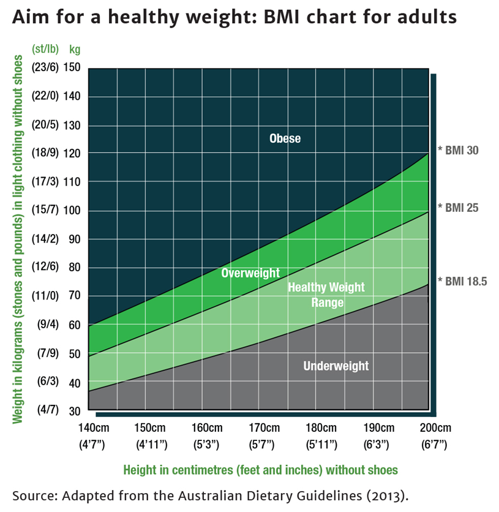

Body mass index, or BMI, is one way to assess whether your weight is in the healthy range. The BMI combines a person’s height and weight to form a measure that can help predict their risk of developing disease.
Another useful measure of determining whether you could be at risk of obesity-related chronic diseases is your waist circumference. Waist circumference is a better predictor than BMI of type 2 diabetes in women and of cardiovascular disease.
Health researchers have found BMI to be a good indicator for the health and lifespan of adults – not necessarily for an individual, but for a group of people who have the same BMI. For example, researchers have shown that a group of people with BMIs of 30, is more likely to have serious illness and die younger, on average, than a group of people with BMIs of 20
Although BMI is not a perfect measure, it is generally agreed to be the most useful and valid for adults. Its use is recommended by the World Health Organization and in the Clinical Practice Guidelines for the Management of Overweight and Obesity in Adults, Adolescents and Children in Australia.
When calculating BMI, for adults a result between 18.5 and 24.9 is considered to be within the healthy weight range. However, there are some exceptions. For example, the healthy weight BMI range tends to be:
It is important to remember that the BMI equation is only relevant for adults and should not be used as an indicator of healthy weight for children.
Pregnancy also affects BMI, but a woman’s weight gain during pregnancy is necessary for a healthy baby and should be temporary.
You can calculate your BMI using the Healthy Weight Guide BMI calculator. To save and track your BMI over time, register with the Healthy Weight Guide website.
To calculate your BMI yourself, the BMI equation is:
The following chart might also help you to work out your BMI at a glance.
| BMI | Classification |
|---|---|
| Less than 18.5 | Underweight |
| 18.5-24.9 | Healthy weight |
| 25-29.9 | Overweight |
| 30+ | Obese |
For most people, the following applies:
Remember, BMI is just one way to assess whether you are a healthy weight. You could also try measuring your waist circumference to determine your risk of obesity-related chronic disease.
This page's contents taken from: http://healthyweight.health.gov.au
National Health and Medical Research Council (2013). Clinical Practice Guidelines for the Management of Overweight and Obesity in Adults, Adolescents and Children in Australia. Melbourne: NHMRC.